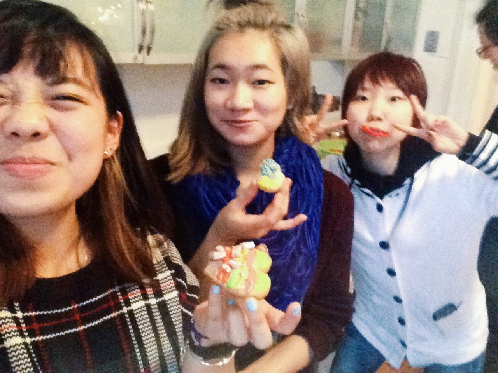
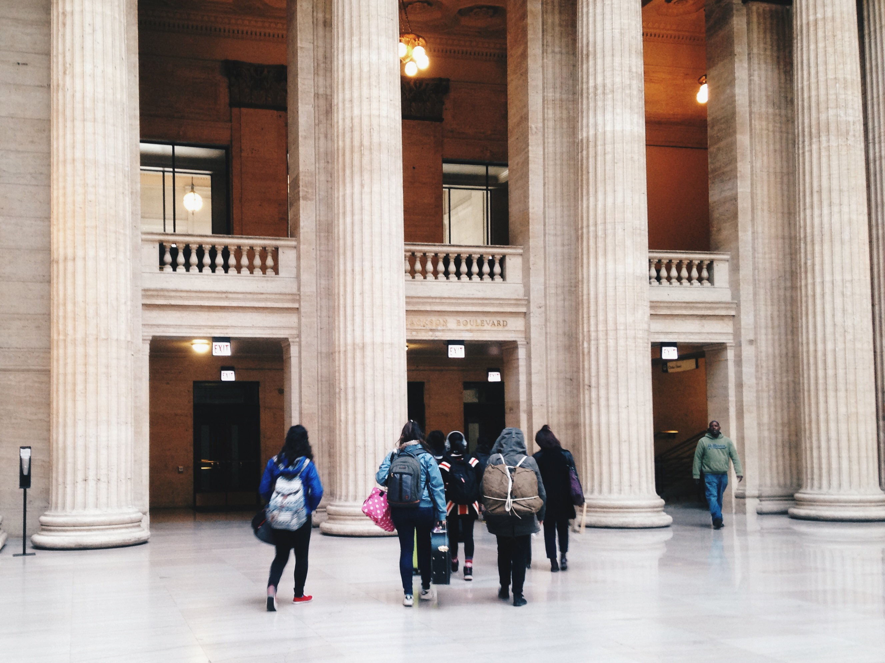
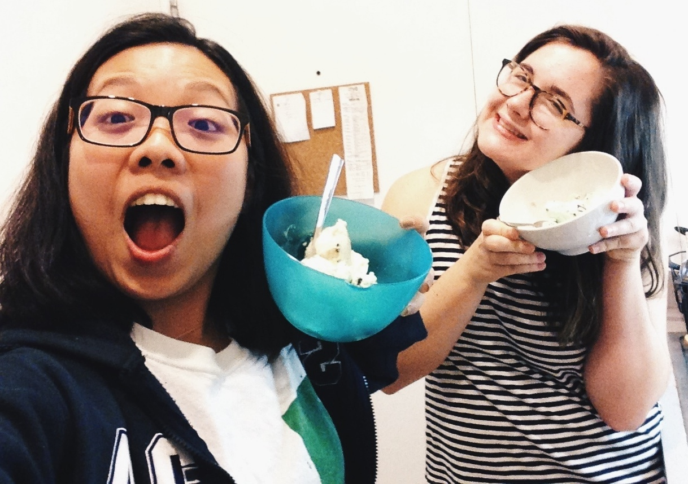
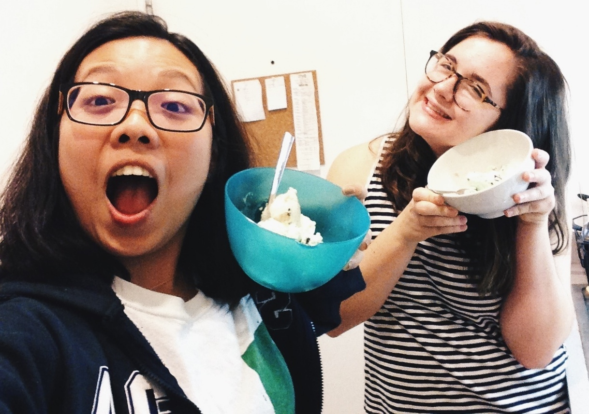
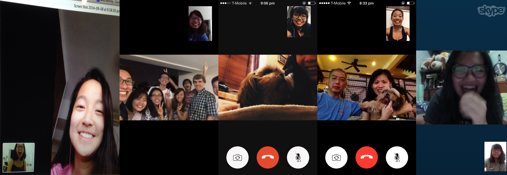

around Chicago
We need to go for more tacos
We are weird
But weird is good
around Chicago
We need to go for more tacos
We are weird
But weird is good
hi liv $3 shirts and discussions about how milk should not be added to tea pulling through core crits together blick art competitions conquering the woodshop impromptu ear piercing my partner in crime I am going to miss you over break
immensely thankful for iv people always feel the safest and most comfortable with them fall conference christmas party - weird christmas tree, cookie consumption fellowship im sad gabe is done with school and kristina, claire, connie and ariel will be soon too but thankful for whatever time we have had and will have smileyface
i would not know how this semester would be like
without these two weirdos
we have seen each other
at our best and our worst
and have had duck together
and laughed together
cried together
had sleepovers hurhur
it is not going to be the same without joanie
but i am so thankful for whatever time we have had together
we still need a baby for the dorm
and our worst
and have had duck together
and laughed together
cried together
had sleepovers hurhur
it is not going to be the same without joanie
but i am so thankful for whatever time we have had together
we still need a baby for the dorm
being far away from home is weird people are so close to heart yet physically. apart. calls are nice though, calls are always nice.